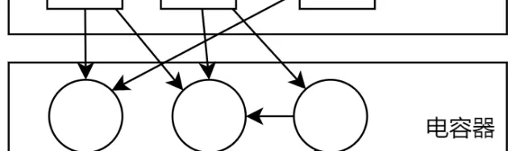
红石电路和有向图
从原理上讲，一个不增减原件的稳定红石系统的信号计算和更新等各方面的问题和红石线一点关系都没。为了弄清楚红石电路到底长什么样以及方便后面的分析，要先引入有向图的概念。
有向图就是把一些节点用箭头连接起来，这些箭头可以是双向的，也可以是单向的。下图就是一个简单的有向图，图中圆圈叫做节点，箭头表示有向边:
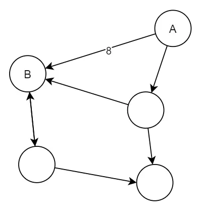
有向图
具体到红石电路上，我们用节点表红石原件，比如红石块，比较器，活塞等等，用节点A指向B表示A是B的一个信号源(什么是信号源见专栏1)，当然我们也能定义有向边A->B上的数字(上图中是8)表示信号源A和红石原件B之间的距离distance.
注意有向边只是逻辑连接，和红石线没有任何关系
来看例子如图的电路:
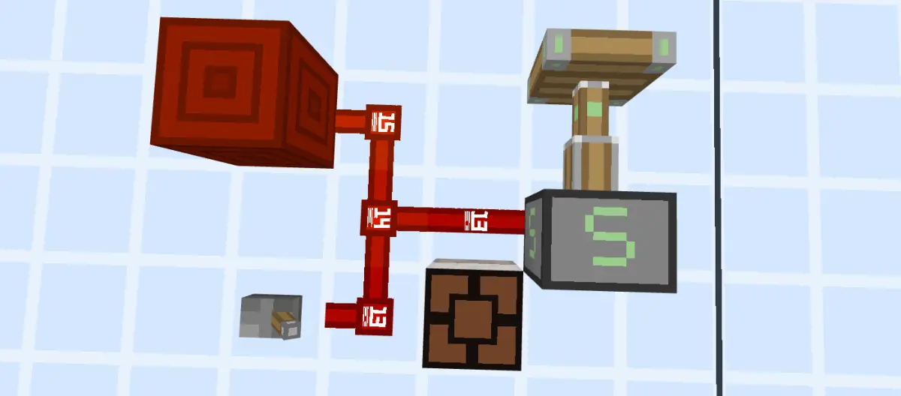
示例电路
可用转换成这样一个有向图:
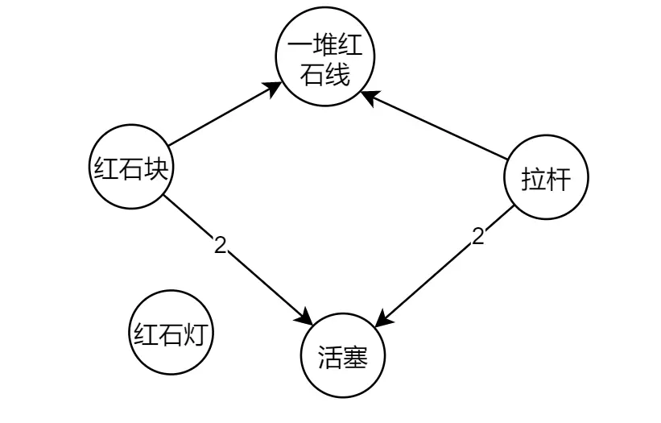
有向图
然后这个电路就很清晰了，活塞有两个信号源:红石块和拉杆，而且距离都是2。红石灯没有任何信号源，因此它的信号是0.这一堆红石线有相同的信号源，也就是拉杆和红石块。在有向图中红石线没啥用，因此下面就不画了
题外话，MCBE中的红石系统就是有向带权图，用邻接表存的
红石电路的关系构建
红石线唯一的作用就是体现在这里，在你放置红石原件的时候游戏会搜索电路，给该原件加上信号源，反映在有向图中就是在图中画一个圈，然后补上和这个圈有关的箭头。经常听到的充能特性，连接特性或者激活特性就是体现在这个过程中。比如下面这个例子，左边是弱充能，右边是强充能，这在游戏内部的区别是羊毛前方的红石粉能否搜索到羊毛后面的信号源(左边没有，右边能搜索到中继器)的问题
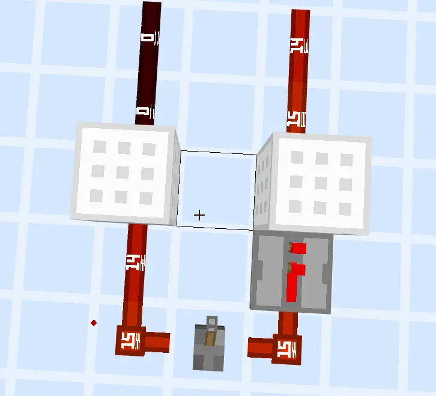
强弱充能
至于如何搜索不是这里的重点，不会真有人做电路要看信号源吧，不会吧不会吧（。(不过如果你真想可视化倒不是没办法，用我主页的插件就能办到了,启用插件后用木棍右击红石原件你能看到一些你平时观察不到的东西,包括信号源，信号强度等等)。
再谈生产者电容器和消费者
经过上面的阐述，不难发现:
概括一下就是：整个红石电路就是这样一个带权有向图:红石信号就是顺着有向边在各个节点之间流动，边上的数值表示了这次流动的能量损耗；有一些节点负责生产红石信号，有一些节点负责增强，传输，延迟，周转，存储红石信号，还有一些原件只负责对红石信号进行响应。有点计算机系统的味道了(雾).
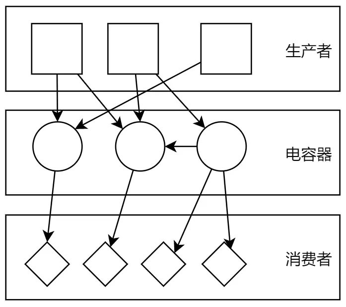
红石电路的抽象表示
单gt内的游戏运行流程
如下图是MCBE单gt内的更新顺序表
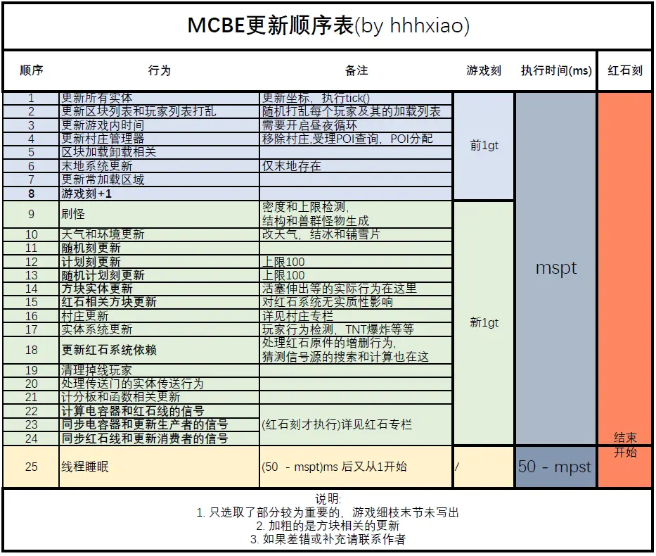
单gt内的游戏运行流程
这里主要强调下面几个点:
然后说几个和红石有关的事件:
红石信号的计算
在前面了解红石电路的构成后你自己都能猜到为什么mojang要设计这样的计算方式:
生产者和消费者是只有输入或者只有输出，所以直接计算并设置即可，但是电容器不一样（说句题外话，红石电路从某种意义来讲更像是一个状态机),因为各个电容器之间的信号计算是没有固定顺序的，如果你直接计算并设置值，会导致有些电容的状态是根据前1gt的值计算的，而有些电容器可能是根据被更新后的电容器来计算的，这样就乱套了。
于是mojang把整个电路的信号更新分为两个步骤，每个原件有1-2个(其实mojang还有一个锁检查的步骤，这是专门为中继器设计的，这里不是重点就不说了):
根据上面的分析，很容易知道每gt消费者和生产者只有evaluate过程，而电容器两者都有,而实际上mojang也是这么做的.
严格的顺序是这样的：
这个顺序也导致了零延迟电容器的产生。
一次不含电容器的信号分析
这里主要为了说清楚玩家交互以及各个消费者的启动延迟问题
先上电路:
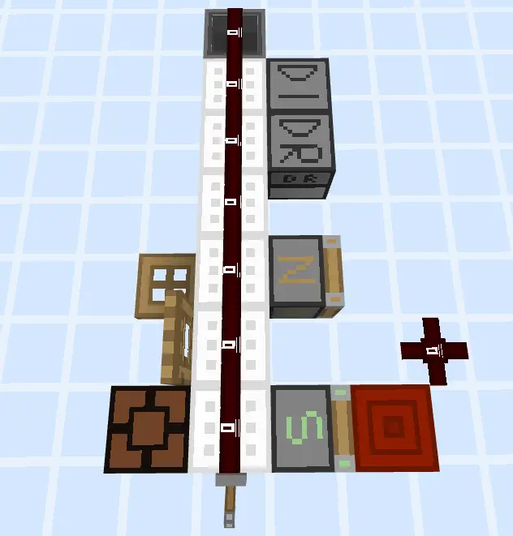
示例电路
单步运行的截图就不放了，太占地方，下面放一个单gt的示意图:
注: 蓝色的是红石刻，白色是普通刻
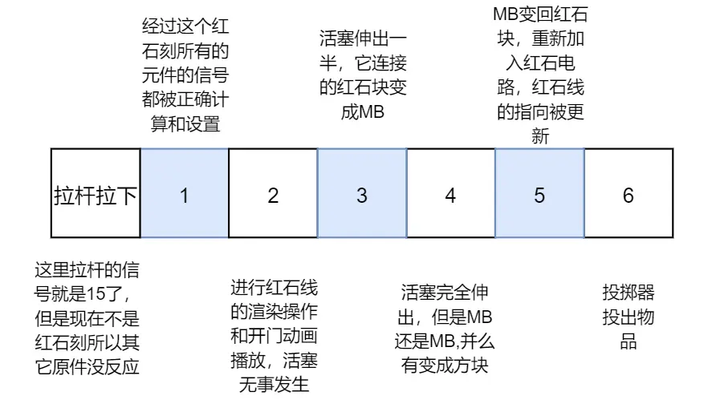
微时序分析
注：
上面的图已经很清晰了说明了各个原件的延时情况
电容器的零延迟
这个现象在上一个专栏已经讲过了就不细说了，具体的各种电路延迟分析不是这里的重点，以后有机会再细说
烧火把，半脉冲和消费者特判
火把是万恶之源
火把不是单纯的火把，而是一个有众多参数和特判的电容器。
火把常规更新
火把新值的计算方法有点与众不同，因此它的信号源永远是它所附着的方块，如果它附着的不是红石块的时候，用来参与max(signal- distance)计算的不是它的直接信号源，而是它的信号源的信号源，也就是它附着的方块的源，这很合理，比如下面的电路：
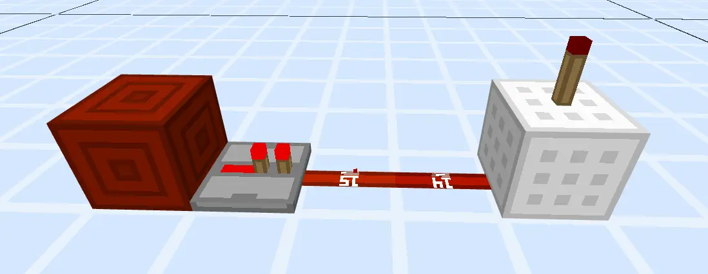
示例火把电路
这里火把唯一信号源是羊毛，而羊毛唯一的信号源是中继器，因此火把计算信号是把中继器作为信号来进行计算的，当它检测到源的源为它提供的信号的最大值大于0的时候它就把自己反向，然后重置自己的燃烧值(燃烧值就是火把内部的一个参数，默认是0)。
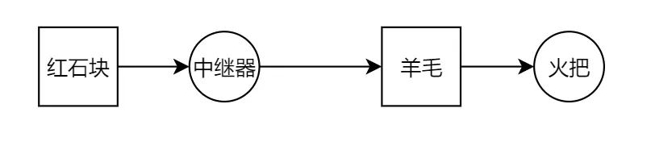
火把电路对应的有向图
说真的这很合理，那么关键来了。
烧火把特判
既然火把是电容器，那么它的源的源有没有可能是自己呢?答案是完全有可能，这就要请出来著名的烧火把电路和对比电路了:
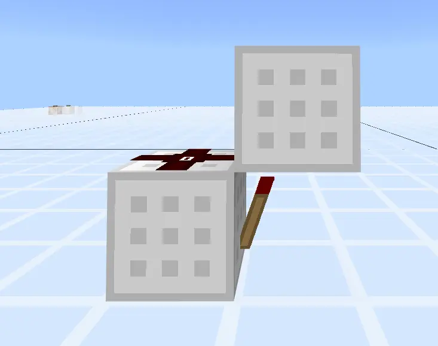
会"烧火把"的电路
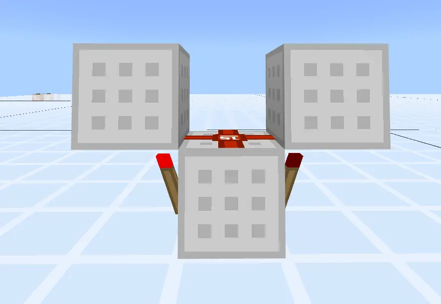
不会"烧"火把的电路
再来看看这俩的有向图:
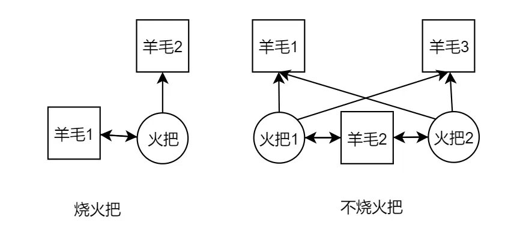
有向图
左图中火把的信号源的信号源是它自己，右图中火把1的信号源的信号源是它自己和火把2，而2同1.那么问题来了，为什么左边会烧而右边不会烧呢？
mojang给下面描述的电路做了一个特判:
mojang把这样的火把信号叫做halfPulse，这里暂时用半脉冲表示
在图1中，当火把1只有一个源的源，因此为它提供信号的肯定是它自己，因此这个火把就被判定为半脉冲,等下1rt再次计算的时候还是同理，它会一直被判定为半脉冲电路。而图二就不一样了，给火把1提供最大信号的源的源交替地是1和2(实测这俩个火把是交替亮灭的，其它玄学情况未遇到)2同理，因此这个电路的火把会被判定为每间隔1rt产生一次半脉冲
半脉冲带来了不少特性:
如果该火把是半脉冲的就会把自己的燃烧值+1,加到16就时钟变成熄灭状态，再也不响应外界信号了，这就是熟知的烧火把现象。
如果不是半脉冲就把燃烧值清零。因此图2的火把的燃烧值就一直在0和1之间跳动，不会烧火火把。
如果mojang在代码里面求最大源的源的时候把<= 改成< ，那么烧火把电路就不复存在了，由此可见这是mj的有意为之
消费者对半脉冲的响应
你以为烧火把这就完了吗？其实并没有，这个半脉冲也不是啥都没用，在游戏中mojang给下面五个红石原件做了半脉冲的特殊处理：
如果不做特判,按照原有的逻辑，半脉冲根本没啥用，他和普通2rt脉冲一样能让所有原件鬼畜,但是Mojang又又又又做特判了:
如果收到半脉冲的消费者不是上面五种，就强行让它们的信号源的信号恒为15,从而达到常激活的目的，但是红石线没这个特判，因此你能正常看到红石线的闪烁但是看不到灯的闪烁和活塞的推拉，就如下面的电路所示，上方的几个原件没做特判，信号强行设置15-距离，根部不考虑信号源的的强度，因此常激活了，但是下面四个特判的原件是正常的。
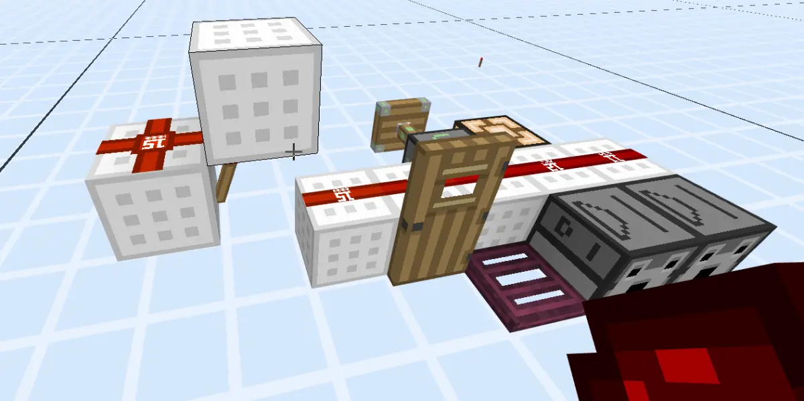
观察者脸对脸不是半脉冲，灯常亮是灯的特性，灯内部还是有0-x的信号交替的
目前能找到的半脉冲电路只有上述的那一个，如果你不用这个电路，那这些特性也就不复存在了。
纵观火把的行为，我不得不怀疑Mojang是吃多了多此一举还是另有隐情。但能确定的是上面的分析并不是火把的全貌，因为经过各种测试没找到另一部分的代码的执行时机，也就没法分析，因此绝大多数情况下上面的特性是足够的
未完待续。